Metas de Usabilidade - BlueSky
Introdução
As metas de usabilidade são fundamentais para garantir que o BlueSky ofereça uma experiência de usuário eficaz, eficiente e satisfatória. Estas metas são definidas com base no perfil do usuário e na análise detalhada de tarefas, visando atingir objetivos específicos em um contexto de uso particular. A usabilidade é crucial para o sucesso de uma plataforma de mídia social descentralizada como o BlueSky, onde a facilidade de uso e a experiência do usuário são fatores determinantes para a adoção e retenção de usuários.
Metodologia
Para definir as metas de usabilidade do BlueSky, utilizaremos os critérios estabelecidos por Nielsen (1993), que abrangem os principais aspectos da usabilidade: eficácia, eficiência, segurança, utilidade, aprendizado e memorização. A avaliação será realizada através de simulações detalhadas do comportamento dos usuários, considerando diversos perfis de usuários e situações de uso identificadas na análise de tarefas. Além disso, serão considerados os princípios de design centrado no usuário e as melhores práticas de UX/UI para plataformas de mídia social.
Metas
Eficácia
O BlueSky deve oferecer as seguintes funcionalidades principais, garantindo que os usuários possam realizar suas tarefas com sucesso:
- Publicação de conteúdo multimídia (texto, imagens, vídeos, GIFs)
- Interação abrangente com outros usuários (respostas, repostagens, curtidas, menções)
- Descoberta de conteúdo relevante através da função "Discover" com algoritmos personalizáveis
- Personalização avançada da experiência com feeds algorítmicos customizados
- Sistema robusto de domínios personalizados para verificação de identidade e autenticidade
| Publicação | Interação |
|---|---|
| 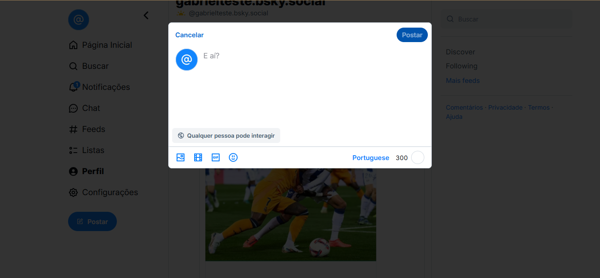 | 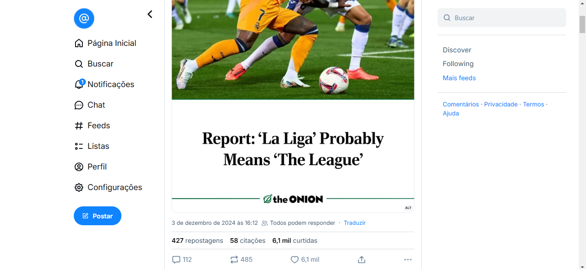 |
| Descobrir | Feed |
|---|---|
| 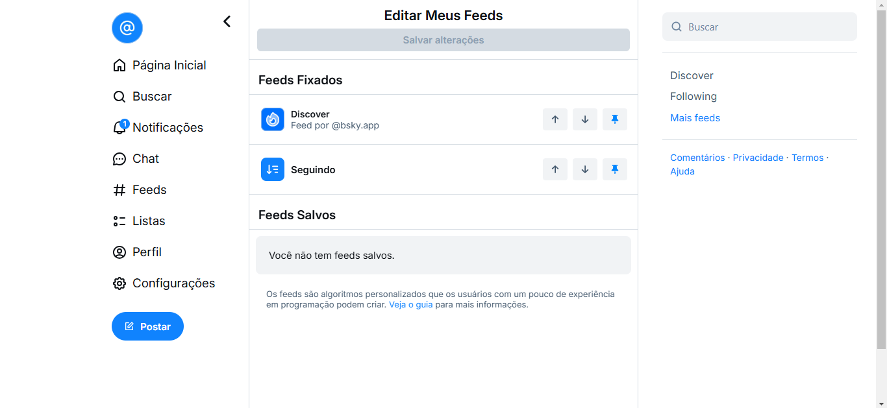 |
| Domínio |
|---|
| 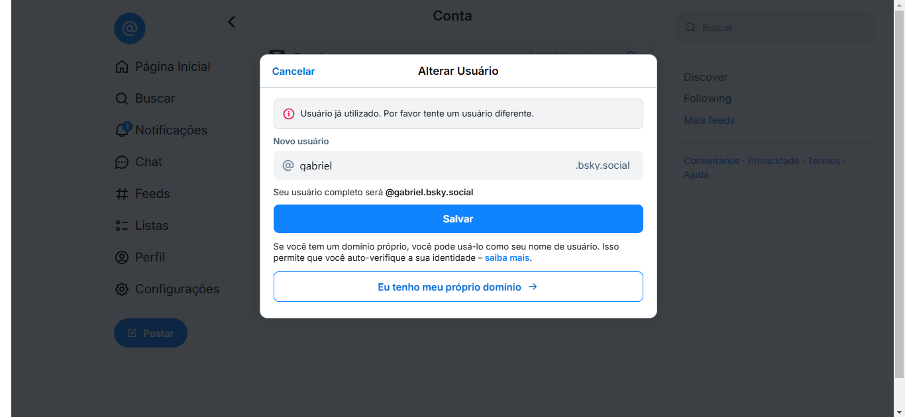 |
Eficiência
Para melhorar a eficiência do BlueSky, focaremos em:
- Implementar uma interface intuitiva e familiar, inspirada em plataformas populares, para facilitar a adaptação dos usuários
- Oferecer sugestões contextuais de menções e hashtags para agilizar a interação entre usuários
- Fornecer um seletor de emojis e GIFs integrado na versão web para expressão rápida e fácil
- Garantir que as principais funcionalidades sejam acessíveis em no máximo 3 cliques ou toques
- Implementar atalhos de teclado personalizáveis para usuários avançados
- Otimizar o carregamento de conteúdo para garantir uma experiência fluida em diferentes dispositivos e conexões
| Interface poluída | Menções não aparecem sempre |
|---|---|
| 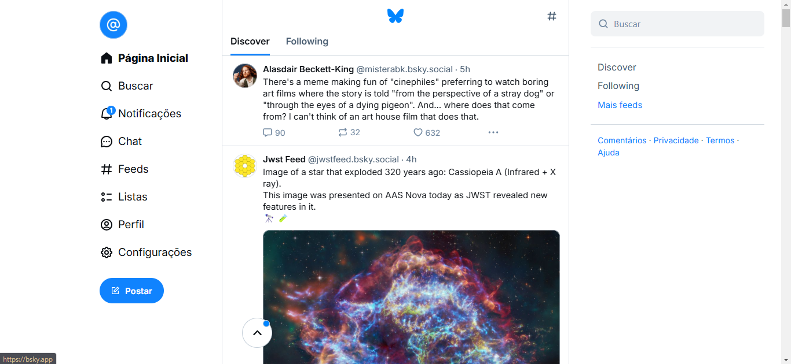 | 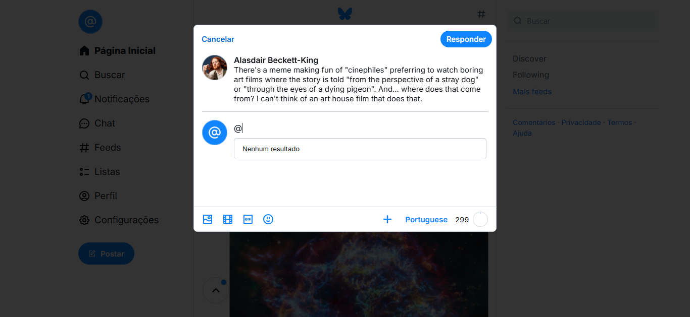 |
| Emojis e Gifs genéricos |
|---|
| 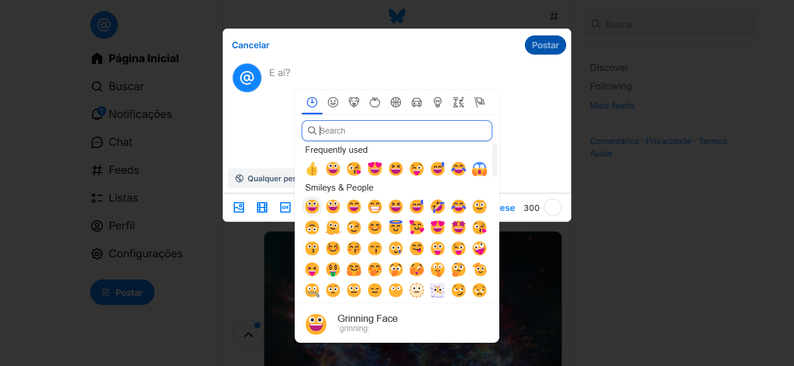 |
Segurança
Para garantir a segurança e privacidade dos usuários, o BlueSky deve:
- Implementar recursos anti-toxicidade avançados, como desvinculação de posts citados, ocultação de respostas e filtros de conteúdo personalizáveis
- Oferecer filtros de notificação prioritários e granulares para gerenciar interações indesejadas
- Fornecer ferramentas de moderação eficazes e transparentes para manter um ambiente seguro
- Garantir a proteção dos dados e privacidade dos usuários através de criptografia de ponta a ponta
- Implementar autenticação de dois fatores e opções avançadas de controle de acesso
- Oferecer um painel de controle de privacidade detalhado e fácil de usar
| Poucos atalhos anti-Toxicidade | Sem configuração de notificação |
|---|---|
| 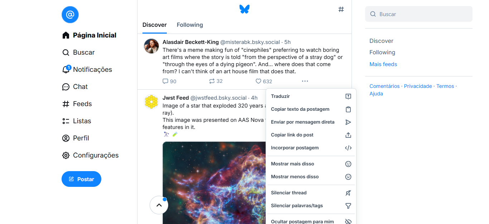 | 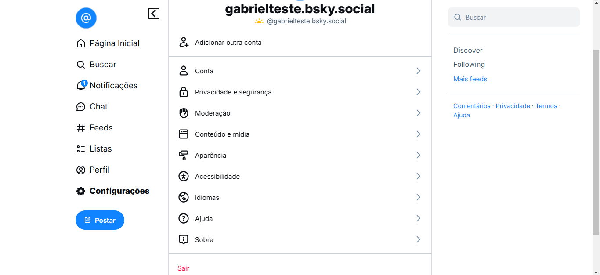 |
| Moderação sem suporte | Pouca opção de privacidade |
|---|---|
| 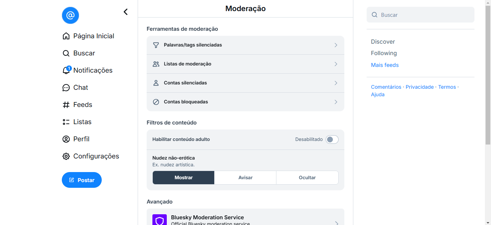 | 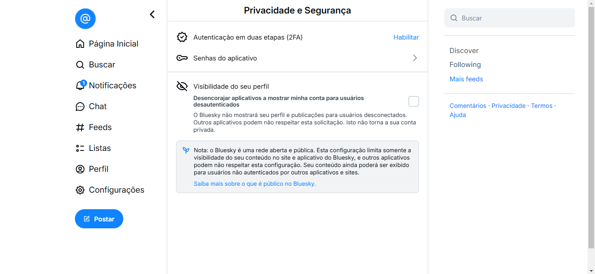 |
Utilidade
O BlueSky deve oferecer:
- Publicação de diversos tipos de conteúdo com opções avançadas de formatação e agendamento
- Player de vídeo e música integrado com suporte a streaming e compartilhamento de playlists
- Sistema de domínios personalizados com verificação aprimorada e integração com identidades digitais descentralizadas
- Fórum ou espaço para interação da comunidade com recursos de moderação colaborativa
- Ferramentas de análise de engajamento para criadores de conteúdo
- Integração com carteiras digitais para transações e monetização de conteúdo
| Sem agendamento ou formatação | Vídeos e músicas |
|---|---|
| 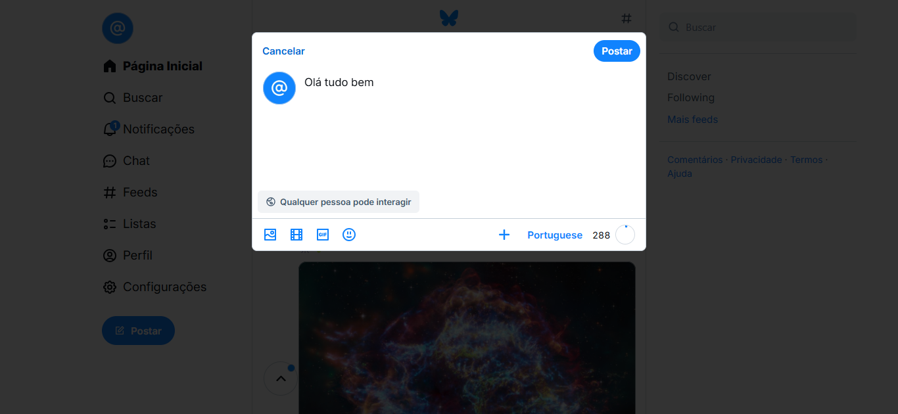 | 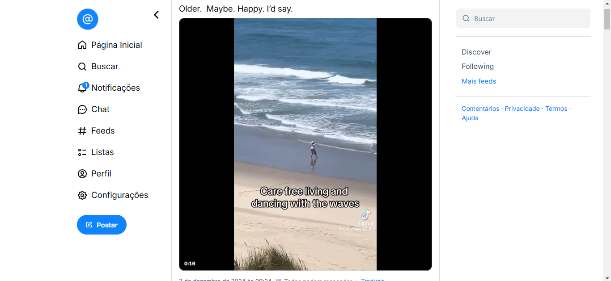 |
| Domínios grandes e de difícil compartilhamento | Sem estatísticas de engajamento |
|---|---|
| 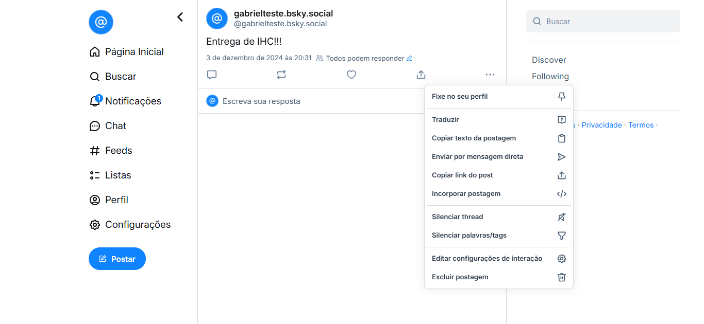 |
Facilidade de aprendizagem
Para facilitar o aprendizado, o BlueSky deve:
- Manter uma interface consistente e intuitiva, com elementos familiares de outras plataformas sociais
- Fornecer "Starter Packs" personalizados baseados nos interesses do usuário para facilitar a descoberta de conteúdo relevante
- Implementar um sistema de onboarding interativo e gamificado para novos usuários
- Oferecer tutoriais contextuais e dicas in-app para novos recursos e funcionalidades avançadas
- Disponibilizar um centro de ajuda abrangente com guias, vídeos e FAQs
- Implementar um assistente virtual para suporte imediato e orientação de uso
| Tela principal de novos usuários sem nenhum suporte ou tutorial |
|---|
| 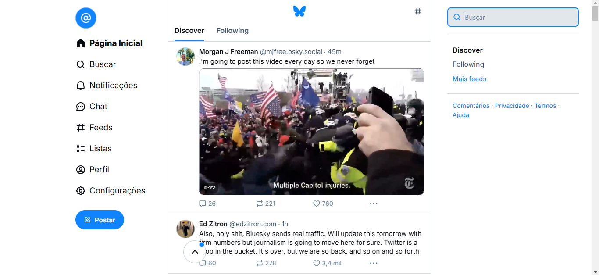 |
| Suporte genérico e fora do site apenas |
|---|
| 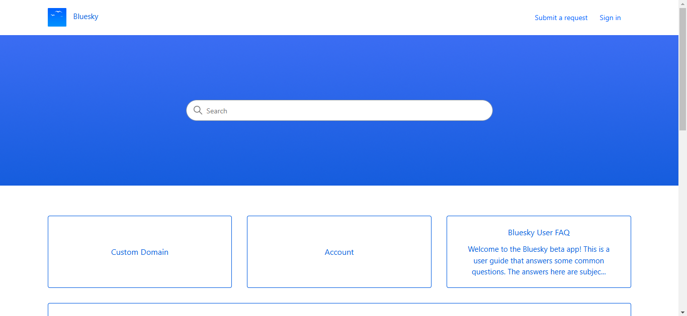 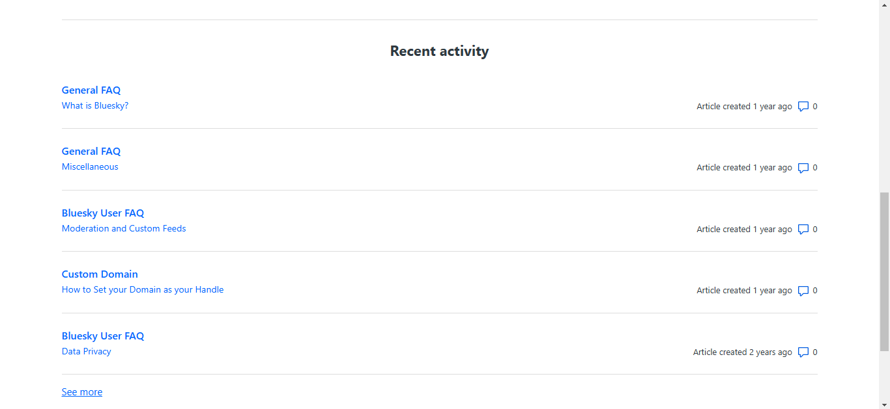 |
Memorização
Para melhorar a memorização e facilitar o uso recorrente, o BlueSky deve:
- Manter uma estrutura de navegação consistente e lógica em todas as versões (web, iOS e Android)
- Utilizar ícones, rótulos e metáforas visuais claras e familiares para funções comuns
- Oferecer uma aba "Favoritos" personalizável para acesso rápido ao conteúdo e funcionalidades mais utilizadas
- Implementar um histórico de ações recentes para facilitar a retomada de tarefas
- Evitar mudanças drásticas no layout ou nas funcionalidades principais, priorizando atualizações incrementais
- Fornecer opções de personalização da interface para que os usuários possam adaptar a plataforma às suas preferências
| Ícones e rótulos bem descritivos mas sem opção de histórico |
|---|
Avaliação e Métricas
Para garantir que as metas de usabilidade sejam alcançadas e continuamente melhoradas, serão utilizadas as seguintes métricas e métodos de avaliação:
- Testes de usabilidade com usuários reais, incluindo testes de tarefas específicas e avaliações heurísticas
- Análise de métricas de engajamento, como tempo de sessão, taxa de conclusão de tarefas e frequência de uso de funcionalidades
- Coleta e análise de feedback dos usuários através de pesquisas de satisfação
- Monitoramento de métricas de desempenho, como tempo de carregamento e taxa de erros
- Análise de padrões de uso e jornadas do usuário para identificar áreas de melhoria
- Testes A/B para avaliar o impacto de novas funcionalidades e mudanças de design
Conclusão
As metas de usabilidade definidas para o BlueSky visam criar uma plataforma de mídia social descentralizada que seja não apenas eficaz e eficiente, mas também segura, útil, fácil de aprender e memorável. Ao priorizar estes aspectos da usabilidade, o BlueSky pode oferecer uma experiência de usuário superior, diferenciando-se no mercado competitivo de redes sociais.
É fundamental que estas metas sejam constantemente avaliadas e ajustadas durante o desenvolvimento e evolução do projeto. A equipe deve manter um ciclo contínuo de feedback, teste e iteração, garantindo que o BlueSky não apenas atenda, mas supere as expectativas e necessidades de seus usuários em um ecossistema digital em constante mudança.
A implementação bem-sucedida destas metas de usabilidade permitirá que o BlueSky se destaque como uma plataforma inovadora, centrada no usuário e alinhada com os princípios de descentralização e empoderamento do usuário, estabelecendo novos padrões para o futuro das mídias sociais.
Referências Bibliográficas
- Barbosa, S. D. J.; Silva, B. S. da; Silveira, M. S.; Gasparini, I.; Darin, T.; Barbosa, G. D. J. (2021) Interação Humano-Computador e Experiência do usuário. Autopublicação. ISBN: 978-65-00-19677-1.
- Nielsen, J. (1993). Usability Engineering. Morgan Kaufmann Publishers Inc., San Francisco, CA, USA.
- Norman, D. A. (2013). The design of everyday things: Revised and expanded edition. Basic books.
- Krug, S. (2014). Don't make me think, revisited: A common sense approach to Web usability. New Riders.
Bibliografia
Barbosa, S. D. J.; Silva, B. S. da; Silveira, M. S.; Gasparini, I.; Darin, T.; Barbosa, G. D. J. (2021) Interação Humano-Computador e Experiência do usuário. Autopublicação. ISBN: 978-65-00-19677-1.s
Ventoy (2024) Releases · ventoy/Ventoy. GitHub. Disponível em: https://github.com/Interacao-Humano-Computador/2023.2-Ventoy/blob/main/docs/AnaliseDeRequisitos/metasUsabilidade.md (Acesso em: 2 de dezembro de 2024)
 Histórico de Versão
Histórico de Versão
Histórico de Versão
| Data | Versão | Descrição | Autor | Data da Revisão | Revisor |
|---|---|---|---|---|---|
| 01/12 | 1.0 | Criação do documento | Gabriel Santos Monteiro | ||
| 03/12 | 1.1 | Detalhamento das metas | Gabriel Santos Monteiro | ||
| 03/12 | 1.2 | Imagens detalhadas | Gabriel Santos Monteiro |